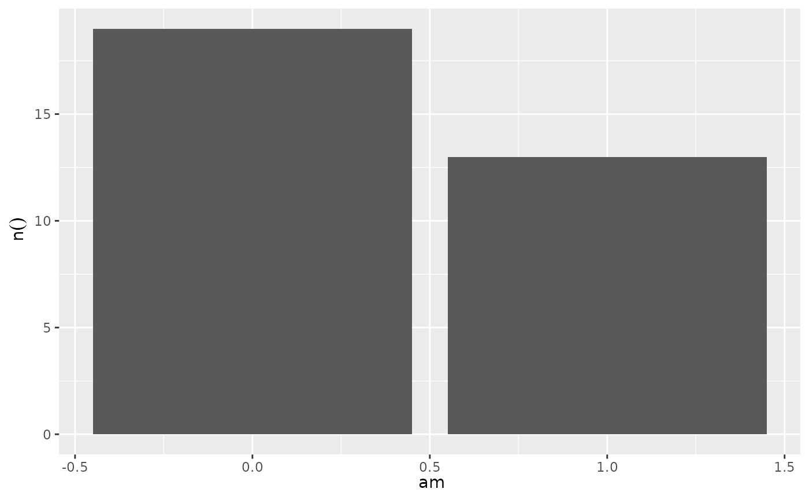
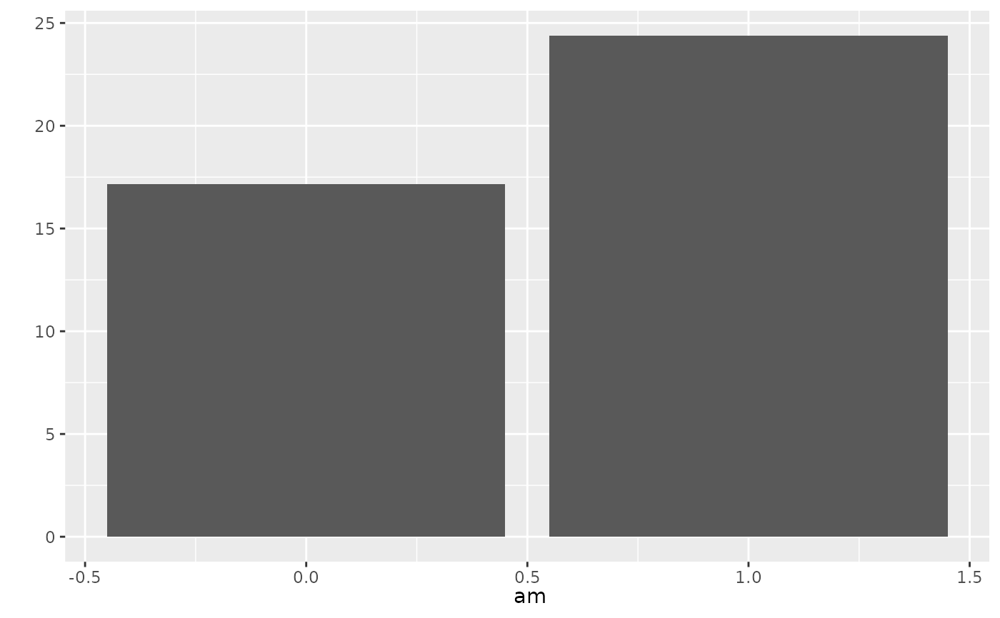
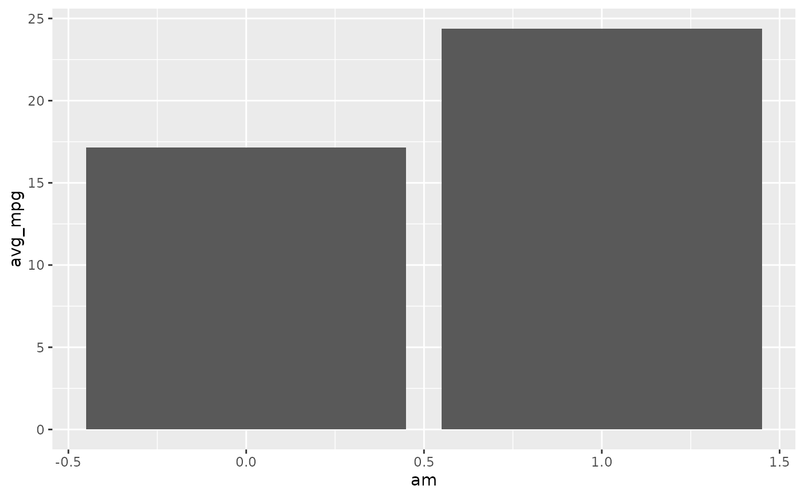
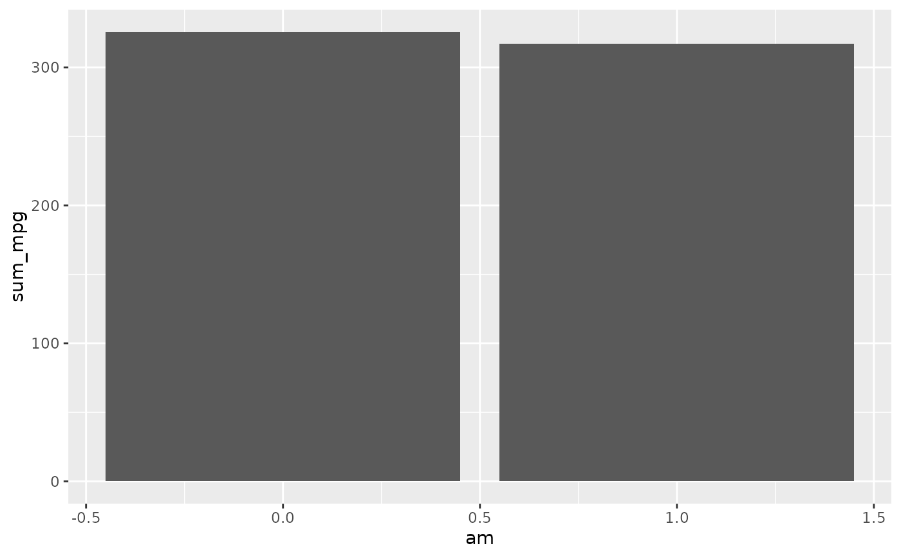

Uses very generic dplyr code to aggregate data and then `ggplot2` to create the plot. Because of this approach, the calculations automatically run inside the database if `data` has a database or sparklyr connection. The `class()` of such tables in R are: tbl_sql, tbl_dbi, tbl_spark
dbplot_bar(data, x, ..., y = n())
library(ggplot2)
library(dplyr)
# Returns a plot of the row count per am
mtcars |>
dbplot_bar(am)

# Returns a plot of the average mpg per am
mtcars |>
dbplot_bar(am, mean(mpg))

# Returns the average and sum of mpg per am
mtcars |>
dbplot_bar(am, avg_mpg = mean(mpg), sum_mpg = sum(mpg))
#> $avg_mpg

#>
#> $sum_mpg

#>